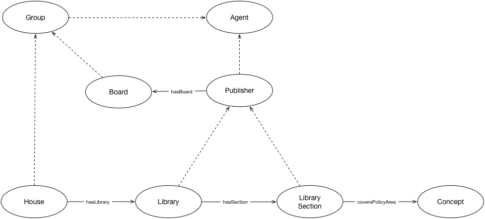

IRI: http://parliament.uk/ontologies/publisher/Agent
IRI: http://parliament.uk/ontologies/publisher/Concept
IRI: http://parliament.uk/ontologies/publisher/EditorialBoard
IRI: http://parliament.uk/ontologies/publisher/Group
IRI: http://parliament.uk/ontologies/publisher/House
IRI: http://parliament.uk/ontologies/publisher/Publisher
IRI: http://parliament.uk/ontologies/publisher/ResearchSection
IRI: http://parliament.uk/ontologies/publisher/ResearchService
IRI: http://parliament.uk/ontologies/publisher/ThingHavingPublisher
IRI: http://parliament.uk/ontologies/publisher/hasEditorialBoard
IRI: http://parliament.uk/ontologies/publisher/hasFocus
IRI: http://parliament.uk/ontologies/publisher/hasPublisher
IRI: http://parliament.uk/ontologies/publisher/hasResearchService
IRI: http://parliament.uk/ontologies/publisher/hasResearchSection
This HTML document was obtained by processing the OWL ontology source code through LODE, Live OWL Documentation Environment, developed by Silvio Peroni.